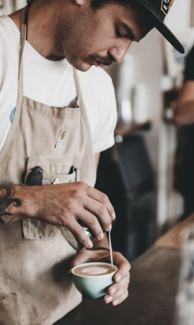
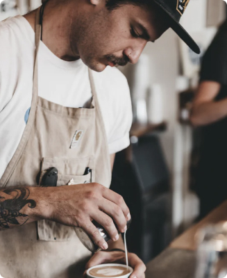
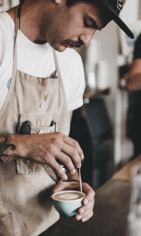
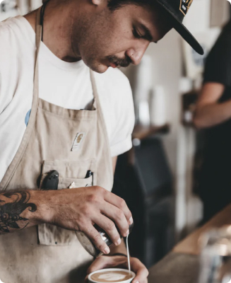

Our commitment
We’re built on a simple mission and a commitment to doing good along the
way. We want to make it easy for you to discover and brew the world’s best
coffee at home. It all starts at the source. To locate the specific lots we want
to purchase, we travel nearly 60 days a year trying to understand the
challenges and opportunities in each of these places. We collaborate with
exceptional coffee growers and empower a global community of farmers
through with well above fair-trade benchmarks. We also offer training, support
farm community initiatives, and invest in coffee plant science. Curating only
the finest blends, we roast each lot to highlight tasting profiles distinctive to
their native growing region.
Uncompromising quality
Although we work with growers who pay close attention to all stages of
harvest and processing, we employ, on our end, a rigorous quality control
program to avoid over-roasting or baking the coffee dry. Every bag of coffee is
tagged with a roast date and batch number. Our goal is to roast consistent,
user-friendly coffee, so that brewing is easy and enjoyable.